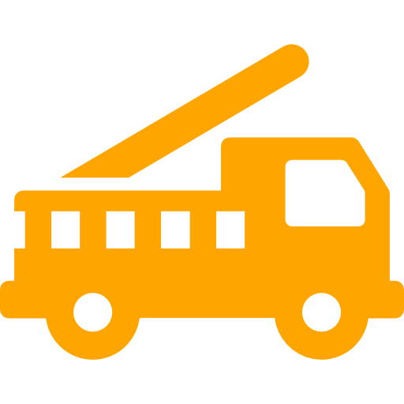
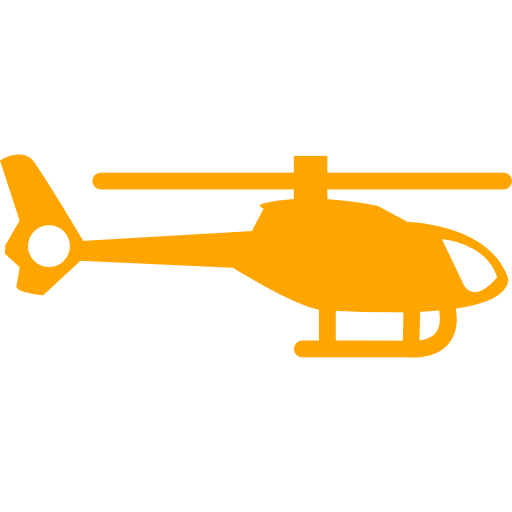
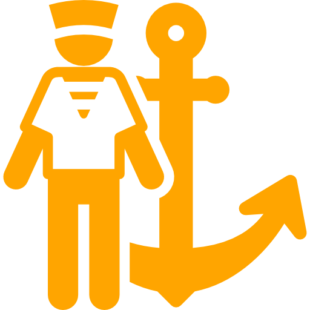

Impanziti pe toata planeta cu sedii stabile, oameni calificati si echipamente de ultima generatie, scopul nostru este de a asigura
siguranta persoanelor de pretutindeni in caz de dezastre naturale neprevazute precum cutremure, incendii sau inundatii.
Crisis Map - observatorul Pamantului
Cu ajutorul Crisis Map, va puteti pune la curent cu zonele afectate de dezastre naturale pentru eventuala lor ocolire pana la
calmarea si rezolvarea situatiei de urgenta.
Zonele afectate sunt marcate cu galben, portocaliu si rosu in functie de gradul de afectare al fiecarui eveniment. Folosind
meniul din dreapta puteti filtra harta dupa diverse criterii legate de evenimentele petrecute si zonele afectate.
234
aeronave si avioane
678
barci de salvare

3067
autovehicule de salvare
134067
persoane calificate
2320
echipaje Cric
Misiuni realizate cu succes pe evenimente
Incendiu - 34.78%
Inundatie - 28.45%
Cutremur - 18.52%
Tsunami - 8.33%
Vulcan - 5.19%
Avalansa - 4.73%
10
ani de activitate
10345
interventii de urgenta

2056
misiuni aeriene

2255
misiuni navale
6034
misiuni terestre
Person Finder - pierdut? Stai linistit! Noi te gasim!
Serviciul Person Finder serveste la a gasi o anumita persoana pierduta (inconstienta sau ranita) in urma dezastrului.
Poate fi folosit de catre dumneavostra prin introducerea unor date despre persoana aflata in stare de urgenta (telefon, locatie
aproximativa, etc.), dupa care echipajele Cric se pun in actiunea de cautare imediat, cat si de autoritati pe baza
informatiilor detinute de persoane care nu au acces la Internet.
Fushion Tables - dovada lucrului bine facut
In cadrul Fushion Tables pot fi observate misiunile recente de salvare terminate cu succes impreuna cu informatiile aferente
precum evenimentul perturbator, tara si locatia in care s-a produs, data la care s-a declarat zona ca fiind evacuata total.
Tabelele sunt clasificate in functie de evenimente si astfel poseda si informatii specifice. Acestea pot fi filtrate dupa
anumite criterii dupa cum veti puteti observa in sectiunea "Fushion Tables" din meniu.
Common Alerting Protocol - instiinteaza din timp si salveaza
Pe baza acestui serviciu de care dispun persoanele calificate din cadrul asociatiei Cric, se transmit fie notificari pe diverse retele,
fie alerte in lumea reala, persoanelor din zonele afectate direct sau din imprejurimi pentru o mai usoara mobilizare a evacuarii.